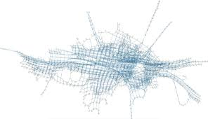
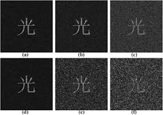

01
Work
Systems, tools, and small products that actually run.
What I’m building ↗Computer Science Student
Future Cryptographer • Hacker • Systems Thinker • Security-Focused Developer
// Work
Mostly small systems: tools that refuse to crash, prototypes that stress edge‑cases, and experiments that grow into something real.
A tiny observability node that watches services, records weird states, and turns noisy metrics into calm, readable signals.
Visual experiments around keyspaces, entropy, and how “random” actually looks when you slow it down and plot it.
A small, opinionated relay that treats every request as hostile, logs just enough, and keeps the surface area boring.
// Experiments
Rough sketches, half‑finished ideas, and small proofs of concept around cryptography, systems, and how complex things behave.


// Collaborate
I like long‑term problems, patient teams, and projects where correctness and clarity actually matter.
Prototyping, refactors, and invisible infrastructure: the parts users never see but feel when they fail.
Reading specs together, mapping failure modes, and keeping the system simple enough to reason about.
// About
I’m learning how to think like a cryptographer: slowly, precisely, and with a healthy amount of paranoia. Most days are spent reading, sketching ideas, and then breaking my own assumptions.
I care about computer science, mathematics, and physics not as buzz words but as tools: ways to see patterns, reason about systems, and build things that don’t fall apart under pressure.
Long‑term, I want to work on problems where security, correctness, and human intuition meet — cryptographic systems that real people can actually use.
// Contact
A few lines about who you are, what you’re building, and why you thought of me is more than enough.
Learning cryptography, thinking about systems, and slowly collecting interesting problems to work on.